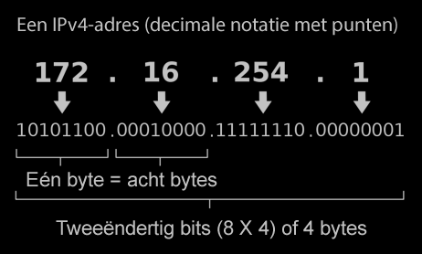
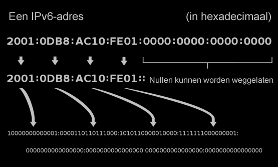

Adressen in een netwerk van netwerken: IP
In deze les, ga je leren over een aantal abstracties die zorgen dat het internet goed kan functioneren.
Op deze pagina, ga je leren hoe de adressen van computers werken.
Een router is een computer die informatie van het ene naar het andere netwerk doorgeeft.
De end-to-endarchitectuur van het internet betekent dat routers zich alleen druk maken over een bericht doorsturen; ze doen niks met de inhoud van het bericht. De inhoud begrijpen is het werk van de computers aan de eindpunten: de ontvanger en zender.
Het internet is niet alleen een netwerk van computers. Het is ook een netwerk van netwerken. De verbindingspunten tussen netwerken heten routers, deze apparaten begeleiden verkeer door subnetwerken van het internet. De routers weten alleen hoe ze informatie door moeten geven aan de volgende router of aan de bestemming; de routers kijken niet wat er in het datapakketje zit (zolang je woont in een land zonder internetcensuur). De informatie van het pakket bekijken en begrijpen gebeurt pas op de eindbestemming. Dit heet het end-to-endprincipe.

Een IP-adres is een uniek getal toegewezen aan ieder apparaat op een computernetwerk.
Pakket wisselen betekent dat het internet korte uitbarstingen van inforamtie geeft, geen lange, continue stromen.
Hoe weten routers waar ze de computer kunnen vinden die je wil?
Ieder apparaat op het internet heeft een uniek internetprotocoladres (IP) (of meer dan een als het een router is), net zoals een woonadres of een e-mailadres. Het internetprotocol specificeert hoe een router met een verzoek voor een ander IP-adres moet omgaan. Iedere router kent de indeling van zijn specifieke buurt van het internet en weet hoe het een pakket moet sturen om het een stukje dichterbij de plek te brengen waar het pakket naar toe moet. Het feit dat de router niet het hele internet hoeft te kennen is goed voor de schaalbaarheid van het netwerk.
Normaliter zijn er veel mogelijke paden van het ene eindpunt naar het andere. Deze overtolligheid laat het internetprotocol alternatieve paden vinden als een router in het midden van het pad wegvalt. Dit is het principe van fouttolerantie.
Wanneer je data verzend over het internet, verdeelt het IP-programma in je computer de data in pakketjes die het één voor één verstuurt. Ieder pakketje kan zelfs een andere route nemen. Dit proces is wat het internet een pakketgeschakeldnetwerk maakt.
- Waarom lijkt het diagram van het internet op een wirwar in het midden met vuurwerk aan de buitenkant?
- Bespreek hoe deze vorm verwant is aan hoe mensen verbinding maken met het internet (via een internetprovider, etc.). Schrijf een korte beschrijving en/of leg het uit aan iemand anders.
- Bezoek http://bot.whatismyipaddress.com/ om je eigen IP-adres te weten te komen.
- Bezoek http://ipinfo.io/ . Welke informatie bevat je IP-adres allemaal? (Je hoeft je niet aan te melden, kijk gewoon naar de informatie in het witte vak.)
De hoeveelheid gedetailleerde informatie die je uit een IP-adres kan halen is best verrassend (en een beetje eng), vooral wanneer je nadenkt over de manieren waarop die informatie gebruikt kan worden.
IPv4
Alle vier de getallen in een IP-adres zijn bytes van 8 bits met een waarde tussen de 0 en 255 (zie rechts). Een 32-bit IPv4-adres (de "v" staat voor "versie") is groot genoeg om 232 computers te ondersteunen. Dat is ongeveer 4 miljard (4 · 109), maar er zijn meer dan zeven miljard mensen op aarde, dus er zijn niet genoeg IPv4-adressen voor iedereen.
IPv6
De langetermijnoplossing is om de lengte van IP-adressen te vergroten. De nieuwe IPv6-adressen zijn 128 bits groot, dat is genoeg om 2128 (ongeveer 1038) computers te ondersteunen.
-
 Is jouw IP-adres IPv4 of IPv6?
Is jouw IP-adres IPv4 of IPv6?
- Zoek je huidige lokale IP-adres op in de instellingen van je computer. Het staat vaak ergens onder de netwerk- of internetinstellingen.